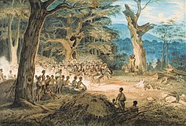

A história da Austrália começa com a presença de povos indígenas há mais de 65 mil anos. Em 1770, o capitão James Cook reivindicou a terra para a Grã-Bretanha, e em 1788 foi estabelecida a primeira colônia penal em Sydney.
A história da Austrália começa com a presença de povos indígenas há mais de 65 mil anos. Em 1770, o capitão James Cook reivindicou a terra para a Grã-Bretanha, e em 1788 foi estabelecida a primeira colônia penal em Sydney.
A união das colônias em 1901 formou a Commonwealth da Austrália, que se tornou independente após as guerras mundiais. Recentemente, a reconciliação com os povos indígenas tem ganhado destaque na sociedade.